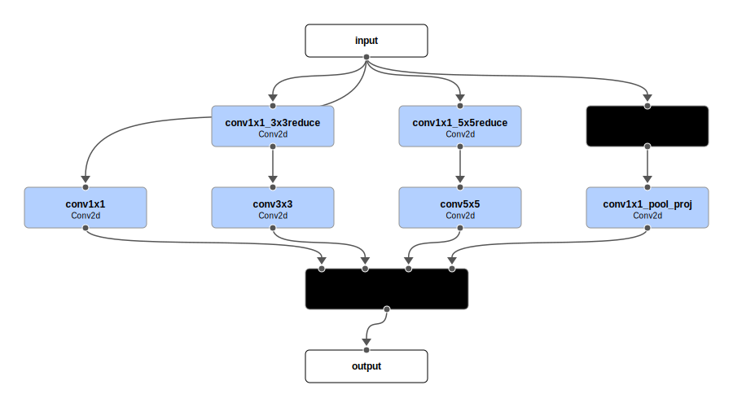
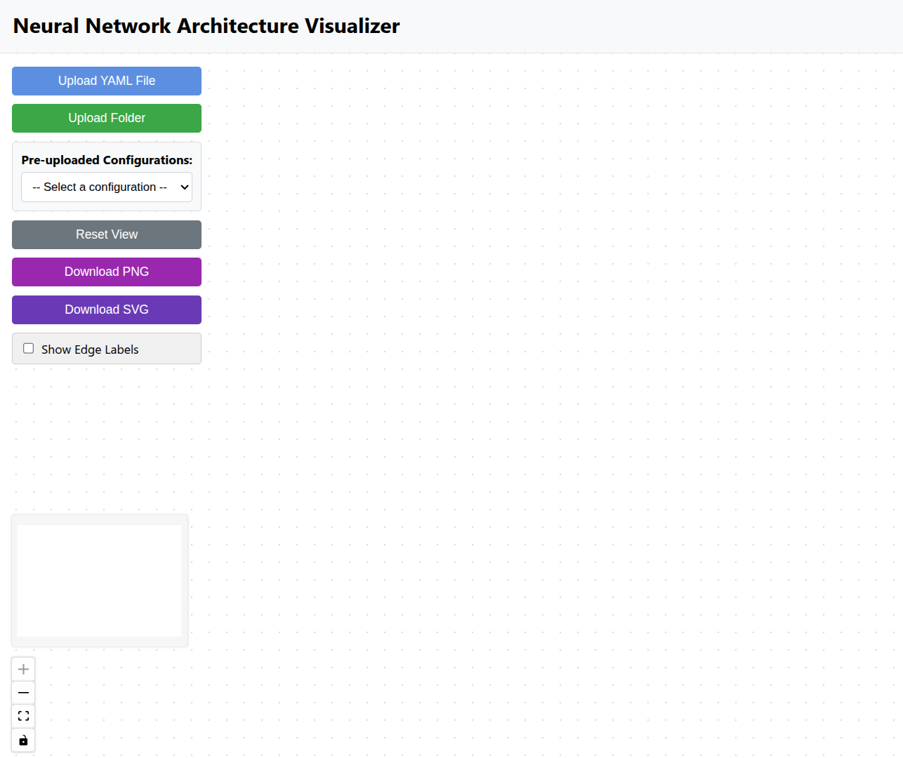
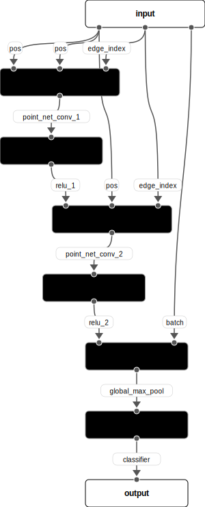
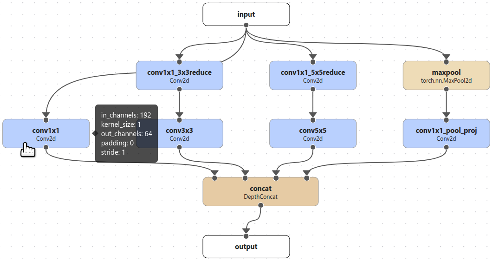
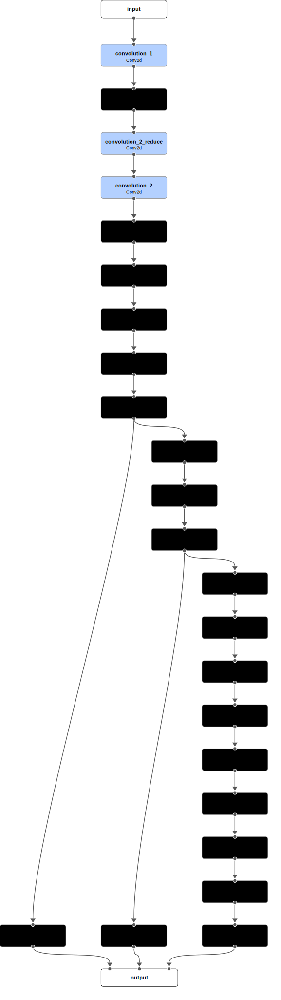

Quick Start
This project aims to create a simple and intuitive format to:
- describe the architecture of a neural network
- be easily parsed by a Python script to build the model
- be parsed by a visualization tool to create a diagram of the architecture.
To this end, a YAML format is defined to describe a so-called ComposableModel (CM), which can be uploaded to the Neural Network Architecture Visualizer for visualization. The CM can be built using the ComposableModel class in the model_composer package (repository)
To use the visualization tool, you need to provide a valid YAML file (or a main YAML file with other referenced YAML files) that describes a CM. The YAML file should conform to the format described in the next section. A toy example is provided below, whose rendered architecture is also shown.
Toy example
name: toy_example
modules:
input:
- x
module_1:
cls: module_type_1
inp_src:
- x
config:
param1: 42
param2: "42"
out_num: 2
module_2:
cls: module_type_2
inp_src:
- module_1.0
- x
config: module_2.yaml
module_3:
cls: module_type_3
inp_src:
- module_2
output:
- module_1.1
- module_3

Architecture of the toy example neural network.
1. YAML format
The YAML file for CM contains the following fields:
- name: The name of the CM. This is used to identify the model in the visualization tool and in the code that builds the model.
- modules: A collection of modules that make up the model. Each module has a name, a set of parameters that define how to build it (except for the "input" and "output" module) and other fields that define the connections between the modules. The fields for each module include:
- cls: The class of the module. This is used to identify the type of module in that builds the model. Optional for visualization.
- inp_src: A list of input sources for the module. These represent the positional arguments of the module.
- config: A dictionary of configuration parameters for the module. This can be either a dictionary of parameters or a path to a YAML file that contains the parameters.
- out_num: The number of outputs for the module. This is used to identify the output sources of the module. Default to 1 if not specified.
2. Define modules
2.1 Input module
- The list of variable names under the input module defines the positional arguments of the model.
- The names of the variables can be arbitrary, but they should be consistent with the rest of the YAML file.
-
The input module does not need any other fields, as its sole purpose is to define the positional arguments of the model.
Example
In the example above, the input module has a single positional argument called x, which is in turn passed to the first module, module_1 (see its inp_src section).
2.2 Actual modules
- The module name is the key of the module in the modules section.
-
The cls field is the class of the module needed to build the model. It can be built-in class (e.g.,
torch.nn.Conv2D) or custom registered class. This field can be omitted if only the visualization is needed.Example
In the example above, the cls field is set to module_type_1 for module_1, module_type_2 for module_2, and module_type_3 for module_3. The actual class names are important for building the model, but can be omitted for the visualization tool.
-
The inp_src field is a list of input sources for the module, representing its positional arguments. The input sources can come from any of the variables specified in the input module or from the outputs of other modules.
How to specify module outputs
- when the module has only one output, the output can be specified by its name only, e.g., module_1.
- when the module has more than one output, the output is specified by its name and the output index, e.g., module_1.0, where the index starts at 0 and goes up to out_num - 1, where out_num is the number of outputs for the module. The out_num field can be omitted if the module has only one output, otherwise it needs to be explicitly set in the YAML file.
Example
In the example above, module_1 has two outputs, which are specified as module_1.0 and module_1.1. In this case, the out_num field needs to be explicitly set to 2 (required) to indicate that the module has two outputs. All other modules have single outputs, so the outputs are specified by the module name only.
-
The config field can be either a dictionary of parameters or a path to a YAML file that contains the parameters that are needed to build the module.
Example
In the example above, module_1 has two parameters, param1 and param2. If a YAML file is provided as in module_2, the parameters are read from the file and passed to the module constructor. The config field can also be omitted if building the module with default parameters is desired or the file is used only for visualization.
-
CM can be nested, meaning that one or more of its modules can be defined as other CMs, which allows the user to choose a specific hierarchical structure for best conveying the architecture of the model.
- The config for the nested CM is recommended to be a path to a separate YAML file that follows the same format as the main YAML file.
- The visualization tool will automatically parse the nested CM. The user can double-click the nested CM to expand the module and inspect its internal structure. This is useful for visualizing complex architectures that can benefit from hierarchical representations. See section 3.3 for more details on how to interact with the CMs in the visualization tool.
2.3 Output module
- The output module is defined by a list of variable names that represent the outputs of the model.
- The variable names can come from any of the modules defined in the modules section, including the input module.
-
The output module does not need any other fields, as its sole purpose is to define the outputs of the model.
Example
In the example above, the output module has two outputs, module_1.1 (second output from module_1) and module_3.
2.4 Real-world example
The example below shows how to define an real-world architecture, i.e., an inception block (3a) from the GoogLeNet, using the CM format.
The parsing relies on the OmegaConf library, which allows for easy interpolation of the parameters. Note the additional hyper_params section, which is helpful for defining all other inception blocks by swapping out the values. The user can thus define any number of additional fields in the YAML file as they see fit to expand the expressiveness of the YAML file.
YAML file for the inception block
name: inception_3a
hyper_params:
in_channels: 192
n_filter_conv1x1: 64
n_filter_3x3reduce: 96
n_filter_3x3: 128
n_filter_5x5reduce: 16
n_filter_5x5: 32
n_filter_pool_proj: 32
modules:
input:
- x
conv1x1_3x3reduce:
cls: Conv2d
config:
in_channels: ${hyper_params.in_channels}
out_channels: ${hyper_params.n_filter_3x3reduce}
kernel_size: 1
stride: 1
padding: 0
inp_src:
- x
conv1x1_5x5reduce:
cls: Conv2d
config:
in_channels: ${hyper_params.in_channels}
out_channels: ${hyper_params.n_filter_5x5reduce}
kernel_size: 1
stride: 1
padding: 0
inp_src:
- x
maxpool:
cls: torch.nn.MaxPool2d
config:
kernel_size: 3
stride: 1
padding: 1
inp_src:
- x
conv1x1:
cls: Conv2d
config:
in_channels: ${hyper_params.in_channels}
out_channels: ${hyper_params.n_filter_conv1x1}
kernel_size: 1
stride: 1
padding: 0
inp_src:
- x
conv3x3:
cls: Conv2d
config:
in_channels: ${modules.conv1x1_3x3reduce.config.out_channels}
out_channels: ${hyper_params.n_filter_3x3}
kernel_size: 3
stride: 1
padding: 1
inp_src:
- conv1x1_3x3reduce
conv5x5:
cls: Conv2d
config:
in_channels: ${modules.conv1x1_5x5reduce.config.out_channels}
out_channels: ${hyper_params.n_filter_5x5}
kernel_size: 5
stride: 1
padding: 2
inp_src:
- conv1x1_5x5reduce
conv1x1_pool_proj:
cls: Conv2d
config:
in_channels: ${hyper_params.in_channels}
out_channels: ${hyper_params.n_filter_pool_proj}
kernel_size: 1
stride: 1
padding: 0
inp_src:
- maxpool
concat:
cls: DepthConcat
config:
dim: 1
inp_src:
- conv1x1
- conv3x3
- conv5x5
- conv1x1_pool_proj
output:
- concat

Architecture of the Inception block from the GoogLeNet.
3. Visualization tool
3.1 User Interface
 The user interface of the visualization tool is designed to be intuitive and easy to use. The frontend is implemented using ReactFlow.
3.2 Functionality
- Pre-uploaded Configurations: The user can select from a list of pre-uploaded neural network architectures to play with the visualization tool. The current list includes:
- GoogLeNet
- PointNetConv
- ToyExample from the previous section
- Upload YAML File: The user can upload a single YAML file that conforms to the format described above. The file is parsed and the architecture is rendered in the visualization tool.
-
Upload Folder: The user can upload a folder that contains multiple YAML files. This useful when the main YAML file references other YAML files in the config field of one or more modules. The user will be asked to select the main YAML file, and the tool will automatically parse the other YAML files in the folder. The YAML files referenced need to be specified using relative paths.
Example folder structure for GoogLeNet
One example folder structure is shown below, which is generated for GoogLeNet. Here
model.yamlis the main YAML file, while the other YAML files referenced by the inception blocks and auxiliary classifiers are underconfigsub-directory. The mainmodel.yamlfile is also attached below. See all other YAML files here.GoogLeNet
├── model.yaml
└── config/
├── inception_3a.yaml
├── inception_3b.yaml
├── inception_4a.yaml
├── inception_4b.yaml
├── inception_4c.yaml
├── inception_4d.yaml
├── inception_4e.yaml
├── inception_5a.yaml
├── inception_5b.yaml
├── auxiliary_classifier_4a.yaml
└── auxiliary_classifier_4b.yamlmodel.yaml of GoogLeNet
name: GoogLeNet modules: input: - x convolution_1: cls: Conv2d config: in_channels: 3 out_channels: 64 kernel_size: 7 stride: 2 padding: 3 inp_src: - x maxpool_1: cls: torch.nn.MaxPool2d config: kernel_size: 3 stride: 2 padding: 1 inp_src: - convolution_1 convolution_2_reduce: cls: Conv2d config: in_channels: 64 out_channels: 64 kernel_size: 1 stride: 1 padding: 0 inp_src: - maxpool_1 convolution_2: cls: Conv2d config: in_channels: 64 out_channels: 192 kernel_size: 3 stride: 1 padding: 1 inp_src: - convolution_2_reduce maxpool_2: cls: torch.nn.MaxPool2d config: kernel_size: 3 stride: 2 padding: 1 inp_src: - convolution_2 inception_3a: cls: ComposableModel config: config/inception_3a.yaml inp_src: - maxpool_2 inception_3b: cls: ComposableModel config: config/inception_3b.yaml inp_src: - inception_3a maxpool_3: cls: torch.nn.MaxPool2d config: kernel_size: 3 stride: 2 padding: 1 inp_src: - inception_3b inception_4a: cls: ComposableModel config: config/inception_4a.yaml inp_src: - maxpool_3 inception_4b: cls: ComposableModel config: config/inception_4b.yaml inp_src: - inception_4a inception_4c: cls: ComposableModel config: config/inception_4c.yaml inp_src: - inception_4b inception_4d: cls: ComposableModel config: config/inception_4d.yaml inp_src: - inception_4c inception_4e: cls: ComposableModel config: config/inception_4e.yaml inp_src: - inception_4d maxpool_4: cls: torch.nn.MaxPool2d config: kernel_size: 3 stride: 2 padding: 1 inp_src: - inception_4e inception_5a: cls: ComposableModel config: config/inception_5a.yaml inp_src: - maxpool_4 inception_5b: cls: ComposableModel config: config/inception_5b.yaml inp_src: - inception_5a avgpool: cls: torch.nn.AdaptiveAvgPool2d config: output_size: 1 inp_src: - inception_5b dropout: cls: torch.nn.Dropout config: p: 0.4 inp_src: - avgpool flatten: cls: torch.nn.Flatten config: start_dim: 1 end_dim: -1 inp_src: - dropout linear: cls: torch.nn.Linear config: in_features: 1024 out_features: 1000 inp_src: - flatten softmax: cls: torch.nn.Softmax config: dim: 1 inp_src: - linear auxiliary_classifier_4a: cls: ComposableModel config: config/auxiliary_classifier_4a.yaml inp_src: - inception_4a auxiliary_classifier_4b: cls: ComposableModel config: config/auxiliary_classifier_4b.yaml inp_src: - inception_4d output: - auxiliary_classifier_4a - auxiliary_classifier_4b - softmax -
Download PNG and Download SVG: The user can download the rendered architecture as a PNG or SVG file. The SVG file is recommended for high-quality images, which can also be edited using Inkscape, Adobe Illustrator, or any other SVG editor.
-
Show Edge Labels: The user can toggle the edge labels on and off. The edge labels show the names of output going into the next node, which can be useful when the architecture is complex. Default is off.
Show edge labels
Showing edge labels can be useful for complex input structures. For example, in Graph Neural Networks (GNNs), the input can consist of the point positions (
pos) and the edge indices (edge_index) of the graph, as well as the batch indices (batch). These inputs are passed to different modules in the GNN. An example is shown below, where the edge labels are shown. The YAML file for this graph is also attached below. This example is based on this notebook from PyTorch Geometric tutorials.
Graph Neural Network (GNN) example with edge labels.
YAML file for the GNN example
name: point_net_conv modules: input: - pos - edge_index - batch point_net_conv_1: inp_src: - pos - pos - edge_index relu_1: inp_src: - point_net_conv_1 point_net_conv_2: inp_src: - relu_1 - pos - edge_index relu_2: inp_src: - point_net_conv_2 global_max_pool: inp_src: - relu_2 - batch classifier: inp_src: - global_max_pool output: - classifier -
Display of Module Configurations: The user can hover the mouse over the module to see the configuration parameters of the module if specified.
Show module configuration

Hovering over the module shows the configuration parameters of the module.
3.3 ComposableModel
The ComposableModel (CM) is a special type of module that allows the user to interact with it. Specifically, when the user double-clicks the CM, the view expands into the module to show its internal structure.
Expanding into nested CMs allows the user to inspect the details of the block without cluttering the main architecture. The visualization tool keeps track of the level of the expanded CM. The Go Back button appears in the expanded view that allows the user to go back to the upper level architecture. The CMs can be nested to any level, so the user can choose the level of granularity that best suits their needs.
The video below shows an example of interacting with the CMs (inception blocks) in the GoogLeNet.
Interacting with ComposableModel
4. Building the model
Currently, PyTorch is the only supported framework for building the model. See also the repository for more details on how to build the model from the YAML file.
Here we will use the GoogLeNet example shown above to illustrate how to build the model. The YAML file is attached below, along with the rendered architecture.
model.yaml of GoogLeNet
name: GoogLeNet
modules:
input:
- x
convolution_1:
cls: Conv2d
config:
in_channels: 3
out_channels: 64
kernel_size: 7
stride: 2
padding: 3
inp_src:
- x
maxpool_1:
cls: torch.nn.MaxPool2d
config:
kernel_size: 3
stride: 2
padding: 1
inp_src:
- convolution_1
convolution_2_reduce:
cls: Conv2d
config:
in_channels: 64
out_channels: 64
kernel_size: 1
stride: 1
padding: 0
inp_src:
- maxpool_1
convolution_2:
cls: Conv2d
config:
in_channels: 64
out_channels: 192
kernel_size: 3
stride: 1
padding: 1
inp_src:
- convolution_2_reduce
maxpool_2:
cls: torch.nn.MaxPool2d
config:
kernel_size: 3
stride: 2
padding: 1
inp_src:
- convolution_2
inception_3a:
cls: ComposableModel
config: config/inception_3a.yaml
inp_src:
- maxpool_2
inception_3b:
cls: ComposableModel
config: config/inception_3b.yaml
inp_src:
- inception_3a
maxpool_3:
cls: torch.nn.MaxPool2d
config:
kernel_size: 3
stride: 2
padding: 1
inp_src:
- inception_3b
inception_4a:
cls: ComposableModel
config: config/inception_4a.yaml
inp_src:
- maxpool_3
inception_4b:
cls: ComposableModel
config: config/inception_4b.yaml
inp_src:
- inception_4a
inception_4c:
cls: ComposableModel
config: config/inception_4c.yaml
inp_src:
- inception_4b
inception_4d:
cls: ComposableModel
config: config/inception_4d.yaml
inp_src:
- inception_4c
inception_4e:
cls: ComposableModel
config: config/inception_4e.yaml
inp_src:
- inception_4d
maxpool_4:
cls: torch.nn.MaxPool2d
config:
kernel_size: 3
stride: 2
padding: 1
inp_src:
- inception_4e
inception_5a:
cls: ComposableModel
config: config/inception_5a.yaml
inp_src:
- maxpool_4
inception_5b:
cls: ComposableModel
config: config/inception_5b.yaml
inp_src:
- inception_5a
avgpool:
cls: torch.nn.AdaptiveAvgPool2d
config:
output_size: 1
inp_src:
- inception_5b
dropout:
cls: torch.nn.Dropout
config:
p: 0.4
inp_src:
- avgpool
flatten:
cls: torch.nn.Flatten
config:
start_dim: 1
end_dim: -1
inp_src:
- dropout
linear:
cls: torch.nn.Linear
config:
in_features: 1024
out_features: 1000
inp_src:
- flatten
softmax:
cls: torch.nn.Softmax
config:
dim: 1
inp_src:
- linear
auxiliary_classifier_4a:
cls: ComposableModel
config: config/auxiliary_classifier_4a.yaml
inp_src:
- inception_4a
auxiliary_classifier_4b:
cls: ComposableModel
config: config/auxiliary_classifier_4b.yaml
inp_src:
- inception_4d
output:
- auxiliary_classifier_4a
- auxiliary_classifier_4b
- softmax
Rendered architecture of GoogLeNet

Architecture of the GoogLeNet.
4.1 Registering modules
- Currently all
torch.nnmodules are supported. These modules are automatically registered with theModuleRegistryclass, and can be directly used in the cls field in YAML file, e.g.,torch.nn.Conv2d,torch.nn.Linear, etc. -
The user can define their own modules through registering with the
ModuleReisgtryclass.Registering a custom module
In the GoogLeNet example above, the DepthConcat module is a custom module that concatenates the inputs along the specified dimension. The Conv2d module is a simple wrapper around
torch.nn.Conv2dthat adds batch normalization and ReLU activation. All other modules are nativetorch.nnmodules. The code for defining and registering the custom modules is shown below.import torch from model_composer import ModuleRegistry @ModuleRegistry.register("DepthConcat") class DepthConcat(torch.nn.Module): """Concatenate the inputs along the specified dimension.""" def __init__(self, dim=1): super().__init__() self.dim = dim def forward(self, *inputs): return torch.cat(inputs, dim=self.dim) @ModuleRegistry.register("Conv2d") class Conv2d(torch.nn.Module): """A simple wrapper around torch.nn.Conv2d.""" def __init__(self, in_channels, out_channels, kernel_size, stride, padding): super().__init__() self.conv2d = torch.nn.Conv2d( in_channels, out_channels, kernel_size, stride, padding ) self.bn = torch.nn.BatchNorm2d(out_channels) self.relu = torch.nn.ReLU() def forward(self, x): return self.relu(self.bn(self.conv2d(x))) -
The user can choose to define custom modules at any level of granularity they see fit and compose them together to form a final ComposableModel. The GoogLeNet example above only used nested CMs to define the inception blocks and auxiliary classifiers, but the user is free to group other modules together to form a CM.
4.2 Building the model
The model can be built by supplying the YAML config file to the ComposableModel class. The class will automatically parse the YAML file and build the model. It automatically determines the correct sequence to call the modules specified in the YAML file with the correct input sources. The code example for building the GoogLeNet model is shown below.
Building the GoogLeNet model
from model_composer import read_config, ComposableModel
cfg = read_config("example/GoogLeNet/model.yaml")
model = ComposableModel(**cfg)
Verifying the model output shape is as expected (all three outputs should be of shape [batch, 1000] for the GoogLeNet model):
Verifying the model output shape
from loguru import logger
import torch
input = torch.randn(1, 3, 224, 224)
output = model(input, print_output_shape=True)
for k, out in enumerate(output):
logger.info(f"Output {k} shape: {out.shape}")
2025-05-08 12:33:28.522 | INFO | model_composer.composer:forward:228 - Module convolution_1 output shape: [torch.Size([1, 64, 112, 112])]
2025-05-08 12:33:28.529 | INFO | model_composer.composer:forward:228 - Module maxpool_1 output shape: [torch.Size([1, 64, 56, 56])]
2025-05-08 12:33:28.533 | INFO | model_composer.composer:forward:228 - Module convolution_2_reduce output shape: [torch.Size([1, 64, 56, 56])]
2025-05-08 12:33:28.540 | INFO | model_composer.composer:forward:228 - Module convolution_2 output shape: [torch.Size([1, 192, 56, 56])]
2025-05-08 12:33:28.545 | INFO | model_composer.composer:forward:228 - Module maxpool_2 output shape: [torch.Size([1, 192, 28, 28])]
2025-05-08 12:33:28.556 | INFO | model_composer.composer:forward:228 - Module inception_3a output shape: [torch.Size([1, 256, 28, 28])]
2025-05-08 12:33:28.572 | INFO | model_composer.composer:forward:228 - Module inception_3b output shape: [torch.Size([1, 480, 28, 28])]
2025-05-08 12:33:28.576 | INFO | model_composer.composer:forward:228 - Module maxpool_3 output shape: [torch.Size([1, 480, 14, 14])]
2025-05-08 12:33:28.586 | INFO | model_composer.composer:forward:228 - Module inception_4a output shape: [torch.Size([1, 512, 14, 14])]
2025-05-08 12:33:28.596 | INFO | model_composer.composer:forward:228 - Module inception_4b output shape: [torch.Size([1, 512, 14, 14])]
2025-05-08 12:33:28.600 | INFO | model_composer.composer:forward:228 - Module auxiliary_classifier_4a output shape: [torch.Size([1, 1000])]
2025-05-08 12:33:28.609 | INFO | model_composer.composer:forward:228 - Module inception_4c output shape: [torch.Size([1, 512, 14, 14])]
2025-05-08 12:33:28.619 | INFO | model_composer.composer:forward:228 - Module inception_4d output shape: [torch.Size([1, 528, 14, 14])]
2025-05-08 12:33:28.630 | INFO | model_composer.composer:forward:228 - Module inception_4e output shape: [torch.Size([1, 832, 14, 14])]
2025-05-08 12:33:28.634 | INFO | model_composer.composer:forward:228 - Module auxiliary_classifier_4b output shape: [torch.Size([1, 1000])]
2025-05-08 12:33:28.636 | INFO | model_composer.composer:forward:228 - Module maxpool_4 output shape: [torch.Size([1, 832, 7, 7])]
2025-05-08 12:33:28.643 | INFO | model_composer.composer:forward:228 - Module inception_5a output shape: [torch.Size([1, 832, 7, 7])]
2025-05-08 12:33:28.651 | INFO | model_composer.composer:forward:228 - Module inception_5b output shape: [torch.Size([1, 1024, 7, 7])]
2025-05-08 12:33:28.653 | INFO | model_composer.composer:forward:228 - Module avgpool output shape: [torch.Size([1, 1024, 1, 1])]
2025-05-08 12:33:28.654 | INFO | model_composer.composer:forward:228 - Module dropout output shape: [torch.Size([1, 1024, 1, 1])]
2025-05-08 12:33:28.656 | INFO | model_composer.composer:forward:228 - Module flatten output shape: [torch.Size([1, 1024])]
2025-05-08 12:33:28.658 | INFO | model_composer.composer:forward:228 - Module linear output shape: [torch.Size([1, 1000])]
2025-05-08 12:33:28.659 | INFO | model_composer.composer:forward:228 - Module softmax output shape: [torch.Size([1, 1000])]
2025-05-08 12:33:28.665 | INFO | __main__:<module>:7 - Output 0 shape: torch.Size([1, 1000])
2025-05-08 12:33:28.666 | INFO | __main__:<module>:7 - Output 1 shape: torch.Size([1, 1000])
2025-05-08 12:33:28.667 | INFO | __main__:<module>:7 - Output 2 shape: torch.Size([1, 1000])
5. Summary
In this tutorial, we introduced the ComposableModel (CM) format for defining neural network architectures in a YAML file. The format is designed to be flexible and extensible, allowing the user to define complex architectures with ease. The visualization tool provides an intuitive interface for exploring the architecture and inspecting the details of the model. The model can be built using PyTorch, and custom modules can be registered for use in the YAML file.
Next, we will dive a bit deeper into why I think using the format might actually be useful.